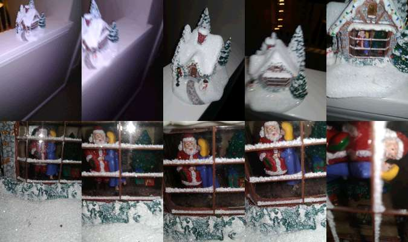
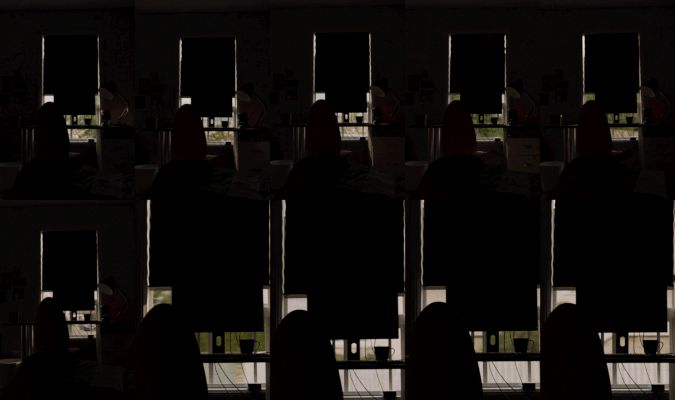
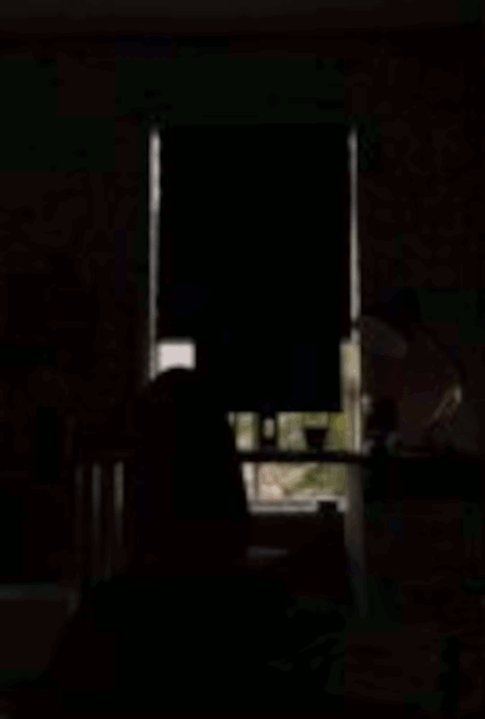

First of all I want to thank the forum admins for keeping this place running. I used to listen to U&U back in high school and was on these forums back then as a lurker. Now that I've got something to share I'm sure glad this place is still around since I do NOT know where I'd post this otherwise.
This is the story of the most inexplicable thing to ever happen to me. It still keeps me up at night, just rolling it around in my head as I fail to make it make sense. This is the story of how I took a video from inside a recurring dream.
I'll have to start many years before. In the Spring of 2019 I entered a death spiral after a very close friend of mine passed away. Actually, "close friend" doesn't do her any justice. It's super cheesy, but she was basically my sister. The kind of person who made life make sense, one of the few people I could rely on. I'm trans and my family rejected me, so there's not many of those people to go around. After she passed I became unmoored for a long period. Everything fell to pieces before my eyes. My driver's license expired without my noticing or really caring. I went deep into debt paying rent in Somerville because my restaurant gig only gave me 10 hours per week. I was in withdrawal from my SSRIs because I couldn't afford them. Frankly, I was drowning with nobody to throw me a life preserver.
I hit my breaking point when, around fall of that year, my phone died. It had been complaining for months that I needed to clean-up space by deleting files, but I ignored it. Then, one day, I woke to find my phone stuck on a black screen, a white loading bar in the middle. When it finally finished loading I was faced with the phone's setup screen. It had completely wiped itself. All my files were gone and I was logged out of my apps and gmail account. That's also when I learned that I had also forgotten my gmail password, which I need for all my other passwords, so I was completely locked out of everything.
I'm sure a better-adjusted person could recover from that. But when I realized that all my chats and photos I had with my now-passed friend were gone, I totally crashed out and pretty much gave up on life. This was the bleakest period of my life and I don't want to get into it because it's just sad and boring. Things are much better now.
Fast-forward to Spring 2023. I was finally getting a handle on life (the pandemic did NOT help) and just moved into the house of a long-time internet friend. This friend, who I'll call Jamie, had been bankrolling this big bungalow full of AuDHD queers in suburban Springfield MA on the back of his cushy defense industry tech job. This arrangement was, in his words, repentance for contributing to the military industrial complex. Sometimes we'd not-so-seriously debate whether or not living like NEETs on the dime of Yoyodyne was "praxis" or not.
Irrespective of the arrangement's moral legitimacy, the house was pretty well-maintained and nice to live in. A bit cramped though. There were six adult housemates living in a house made for two parents and two-point-five kids, so there were the inevitable monthly flare-ups of interpersonal drama. But that was a small price to pay for having my own room.
What wasn't so great was the neighbourhood. It was in the middle of low-density suburbia, so there was nothing to do and nowhere to go. Even worse, there was a Home Owners Association. The HOA are your friendly neighbourhood fascist NIMBYs who have the authority to fine you for flying a trans flag on your front lawn. This actually happened to us. Jamie got charged 48 dollars because I once hung a trans flag from the patio. Anything other than the American flag is banned and you can't do shit about it. You can't claim it's discriminatory because they'll claim the rule's in place for "innocent aesthetic reasons." It's just the way it is.
Jamie was constantly coming to blows with the HOA. They didn't seem to appreciate his mission of housing five under-housed weirdos in their otherwise squeaky-clean neighbourhood. They were probably making up rules just to fuck with us. But Jamie tried to shield us from it, only sharing the latest beef he'd have with the HOA president in his theatre-kid way. He'd put on a one-man show in the common room, reciting the latest out-of-pocket thing the HOA president said to him. "Look, 'social justice' matters to me, too," he'd quote, "my son has Asperger's syndrome. I donate to Autism Speaks every month."
My room at Jamie's was pretty small, long and thin, with a bed at one end and a large window on the other. It was actually originally a closet that he converted into a bedroom for my sake. Despite its size, it was very cozy, and I really enjoyed living there.
This story starts in 2023 while I was living in the house of a long-time internet friend, who I will call Jamie. I normally live in Somerville MA, but I moved out to suburban Springfield because he gave me a good deal on rent. He subleases his house to enough people that he had to get creative with how the rooms are used. For instance, my bedroom was actually a converted closet. It was long and thin, with a bed on one end and a large window on the other. Despite its size, it was very cozy, and I really enjoyed living there.
One downside was the room would sometimes get extremely hot. It was east-facing, so you'd get slammed in the face with the sun every morning. I had to put-up some cheap blackout blinds over the window just to sleep properly. They helped with the sun, but only marginally with the heat. It was a sauna in there some nights.
The heat was probably the cause of my strange recurring dream. For some reason this dream was my brain's reaction to being overheated, and I'd invariably have it during those extremely hot days. During heat waves I'd have the dream almost every night.
In this dream I'm lying in bed and the house is spinning counter-clockwise. I'm just there in bed, staring out the window at the opposite end of the room, watching the world outside slowly pass by. That's all the dream was. I could see, behind the desk and computer monitor and blackout blinds, the view outside ceaselessly shifting along eastward to northward to westward to southward and back again and again. The world slowly drifting right, about one spin every minute.
Usually in the dream it was early morning, just after the sun had started to rise. The sunlight would bound around the room, sneaking in through the bottom-half of the window as our bearing passed south, south-east, east, north-east. Basking in those warm beams for several seconds before plunging again into that dim cool morning light.
I'd lie there, watching it go on for what felt like hours. Mesmerized and dizzy. I'd never know what to do, and I was never be able to get out of bed. Eventually I'd wake up, and every time I'd be drained and nauseated and soaked with sweat in my overheated bedroom.
This brings me to the one time my already weird dream got weirder. There was a single night when my recurring dream diverged from the normal pattern. I remember when it happened, early August 2023, because it was during a particularly stressful time in my life where I had to spend a bunch of time going to government offices, jumping through bureaucratic hoops with the help of my housemate Paula.
The HOA had gotten it into their heads that Jamie was leasing the house on AirBnB or something similar, and that's where us weirdos had come from. AirBnBs were banned by the HOA, so we all had to prove that the house was our permanent address or they threatened they'd call the literal Sheriff(???) to come kick us out.
At this time I still didn't have any valid ID. Paula took time off work to drive me around to various government offices so I could get all my papers in order. The more offices we went to the more it seemed like it was going to be impossible. I didn't have my expired drivers license anymore, and any supporting documentation I'd either deleted or were stuck inside my old gmail account. I could tell I'd pissed Paula off by letting it get this bad and generally being so apathetic. At one point she shook me by the shoulders and said "you need to understand this is a life-or-death situation."
But enough of that, on to the dream. As usual the house was spinning, spinning, spinning, etcetera. But after a while I started hearing the doorbell ring from the opposite end of the house. I barely even registered it happening. I was totally out-of-it, just watching the world pass me by. Too dizzy to get-up and answer. I just kept lying there. Then it rang again. Over and over again. The person ringing the doorbell was really going at it. They started banging on the front door. They started yelling at me.
"STOP SPINNING!"
It was an woman's voice, strained with fury.
"STOP SPINNING THE HOUSE!"
She kept going on and on. Ringing the doorbell and banging on the door and screaming:
"YOU'RE NOT ALLOWED TO SPIN THE HOUSE!"
"STOP SPINNING IT!"
"STOP IT! STOP IT! STOP GOD DAMMIT!"
In hindsight, it's a hilarious image. I can just imagine this person out-front on the covered porch, clinging to the beams so she's not flung off. Screaming and screaming for me to stop this crazy thing, like I had any control over it.
But at the time, in the dream, I was petrified. This person was so angry, her voice whipped-up with this wretched unearthly animal rage. I was terrified she'd get into the house and rip my head off.
Somehow I managed to reach for my bedside table, for my phone. I had it in my mind that I'd call someone for help. But I couldn't make it past the lock screen. I couldn't remember my password. I kept trying different unlock patterns but none of them worked. The woman at the front was only getting louder and louder. I was desperate for something, anything to save me.
And then, well, I don't remember. I think I started to wake up, and the dream started breaking down. Everything came back to normal when I woke, sweating, in my too-hot room. And that was that.
We eventually we managed to find my social security number and figure out my ID situation from there. It took most of the month before I finally got a temporary Mass ID with the house's address on it. The HOA pulled a bunch of other stunts on us, but nothing as existentially harrowing as when they forced us all to give them IDs.
Fast-forward again to November 2025. I'd moved back to Somerville to live in a shared apartment. My old phone was really starting to fall apart so a friend gave me hers as a hand-me-down. The new phone had this feature where it can automatically copy all my files and settings from the old phone. I didn't have any files because I always delete them, but I thought "why the hell not" and did it anyway.
Once it was done copying things over I discovered a pictures folder called "NFRAMETHUMBS" that was totally FULL of pictures copied over from the old phone. Like, hundreds and hundreds of pictures. They were all small low-quality thumbnail versions of every picture I'd ever taken on my old phone, even those I had deleted. Here's an example, it is a picture of my desk back at Jamie's place that I took right after moving in:
I was stunned by the discovery of this folder and all the pictures inside. I jumped on it, spending the rest of the afternoon scrolling through the old thumbnails and hoping-against-hope that something of my dead friend was in there. Unfortunately the earliest thumbnails were from after my phone reset itself in 2019. So it was just a big slideshow of the worst time in my life.
I spent the afternoon looking through the pictures. I was really invested in searching through them since my old phone had once reset itself back in 2019, deleting a bunch of important photos. So I was hoping some of those had survived.
There were also thumbnails for deleted videos. These thumbnails were different screenshots from the video, arranged in a five-by-two grid. I figured out that the frames are arranged in order from right-to-left and top-to-bottom. It goes 1 2 3 4 5, then the next row, then 6 7 8 9 10.
Here's a random example:

They were all pretty boring. But then I found something strange. Thumbnails for a video that I don't remember taking. It was clearly shot from my bed at Jamie's place, looking toward the window. The room is totally dark inside, and you can only see the silhouettes of the blinds, the desk and chair, and the computer monitor. Behind all that, through the window, is the outside world. I darted my eyes between each of the ten surviving frames, trying to make sense of what I was looking at.
Here's the picture:

Every frame has a different view. The outside world was spinning.
You can see that after the sixth frame, the camera zooms-in on the window. You can better make out what's outside, but even with the zoom it's hard to see what's happening. I'll do my best to explain it.
In frame number seven you can see where the white fence of the backyard is split into two sections by a tan-brick post. Above the fence are the leaves of a big tree. In the next frame, frame eight, you can see what's just to the left of the previous: a gap in the trees and the now-uninterrupted white fence. In frame nine there's another different tree. Then, in frame ten, you can see the side of the north-east neighbour's house. You can see the frame of their window slide into view.
See my notes below:

Aside from frame seven, every single one of these pictures would be impossible if the house wasn't spinning. I wouldn't be able to see the side of the neighbour's house from my room unless I stuck my head in the window and really craned my neck, let alone from the bed. In frame six you can make out a car down the road. You can't even see down the road from that window because the trees and fences are in the way!
It's pretty hard to understand what's going on when just looking at the grid. I wanted to be able to see it animated, so I turned it into a GIF. Hopefully this helps make it clearer:

I don't have any idea how long the video was originally, so I picked a random speed for the animation. But based on the filename it was taken August 6th 2023 at 8:23 AM. That was the same week as my bureaucratic fiasco and the weird version of the dream. The one with the doorbell and the woman yelling at me. The dream where I reached for my phone but couldn't unlock it. It could've been the same day. I never wrote down when it happened.
As you can imagine I completely failed to make sense of this. It defied all logic. After a solid week of frantically trying to figure this out, I eventually gave up because I got distracted by other life stuff. Once the confusion was no longer acute, this whole strange affair became relegated to just some fun story I tell to friends.
This brings me to the present day, and why I'm posting this now.
I have to bail out of Somerville again because of money problems. Jamie offered that I could stay in my room at his place again. We've got a part-time thing probably lined up in town so I'm pretty hopeful I can get out of this.
This Friday I'll be moving back to Jamie's place in Springfield. The plan is to tell my housemates the story when I return, since I haven't told them yet. But I wanted to double-check that there's not some obvious rational explanation I am missing. If you have such an explanation, please tell me before I embarrass myself in front of my housemates!
Also, after I'm settled I might be able to collect additional evidence somehow. I can't share any more pictures of my room because the mods said I can very easily doxx myself without realizing it. But if anyone has suggestions for things to look out for, let me know.
-Taylor